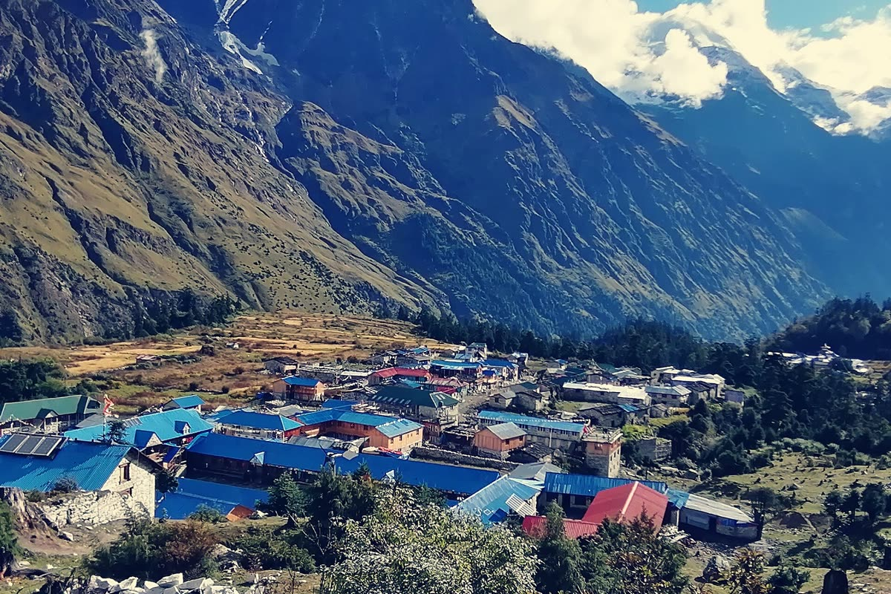

Manaslu Circuit Trek
Overview
Manaslu Circuit Trek
A full circuit of the eighth-highest mountain on earth, over the Larkya La at 5,106 m. Restricted area, few trekkers, deep Tibetan culture.
Trip highlights
- Cross the Larkya La pass at 5,106 m — the highlight and the hard day
- Restricted-area permit keeps trekker numbers low
- Tibetan Buddhist villages at Samdo and Samagaon
- Close views of Manaslu, 8,163 m
- Genuinely remote — a proper expedition feel
What's included
In the price
- All trekking permits, national park fees and the TIMS card
- Licensed English-speaking guide from the region
- Porter support (one porter per two trekkers, weight-limited)
- Teahouse lodging on the trail, twin share
- Three meals a day while trekking
- Domestic flights and ground transfers on the itinerary
- Guide and porter wages, insurance, equipment and lodging
- Oximeter monitoring and a comprehensive first-aid kit
Not included
- International flights and Nepal visa
- Travel insurance (must cover trekking to your maximum altitude)
- Personal trekking gear and sleeping bag
- Hot showers, wi-fi, charging and bottled drinks on the trail
- Tips for your guide and porters
Day by day
Common questions
Do I need previous trekking experience?
For the easier routes, no — if you can walk five to six hours on consecutive days you'll be fine. The challenging routes assume you've done multi-day walking before and are comfortable with long days and high passes.
How fit do I need to be?
Fitter is more comfortable, but stubbornness matters more than athleticism. Most people who turn back do so because of altitude, not fitness. Three months of regular hill walking before you fly is the best preparation.
What about altitude sickness?
Acclimatisation days are built into every itinerary above 3,000 m, and your guide carries an oximeter and checks everyone daily. If someone isn't acclimatising, the schedule changes — descending is always the right call and it never costs you anything.
What's the best time of year?
Spring (March–May) and autumn (September–November) are the main seasons — stable weather and clear mountain views. Upper Mustang sits in the rain shadow, so it also works through the monsoon.
Is a single supplement available?
Yes in Kathmandu and Pokhara hotels. On the trail, teahouse rooms are twin share by default; a private room is usually possible at lower altitudes but can't be guaranteed at the highest lodges in peak season.
How do I book and what's the deposit?
Enquiring costs nothing. Once dates are agreed we take a deposit to secure permits and flights, with the balance due before you start walking. Full terms are sent with your confirmation.
You might also like